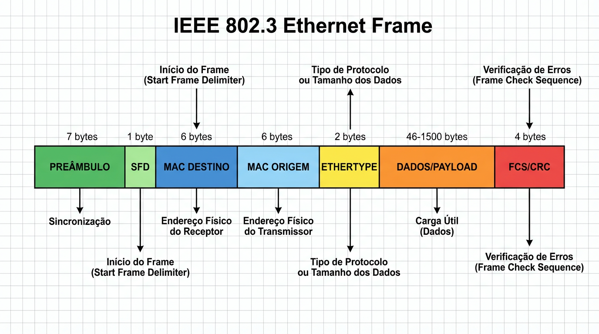

O Frame (quadro) é a unidade de encapsulamento da Camada de Enlace. Sua estrutura define como os dados trafegam fisicamente:
MACsCabeçalho: Inclui Preâmbulo (sincronização), Endereços MAC de Origem e Destino (6 Bytes cada) e EtherType.
PayloadDados Úteis: O pacote vindo da camada superior (ex: IPv4). Varia de 46 a 1500 bytes.
FCSTrailer: Sequência de Verificação de Quadro (4 Bytes) para controle de erros.
Um frame Ethernet deve ter no mínimo 64 bytes. Se os dados forem menores que 46 bytes, o campo "Pad" adiciona bytes extras para atingir o tamanho mínimo necessário para a detecção de colisões (CSMA/CD).

Preâmbulo
Alinhamento e sincronização de clock no meio físico.
Endereçamento
MAC Origem e Destino identificam as NICs locais.
FCS (Trailer)
Validação de integridade para detectar bits corrompidos.